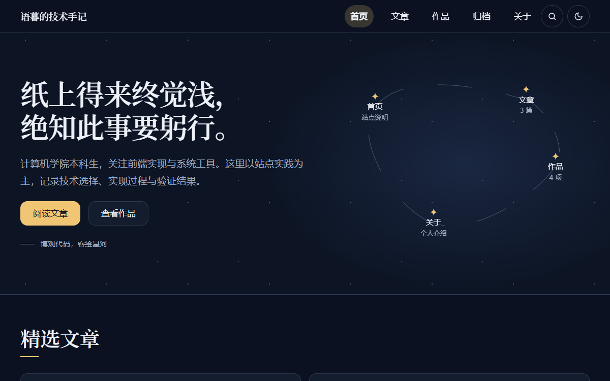
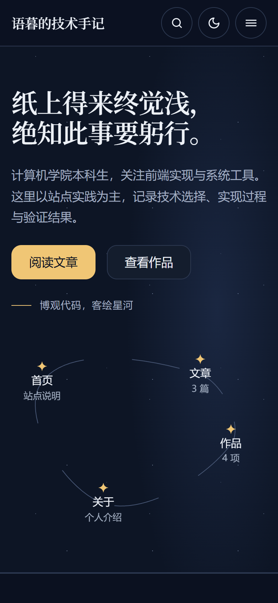
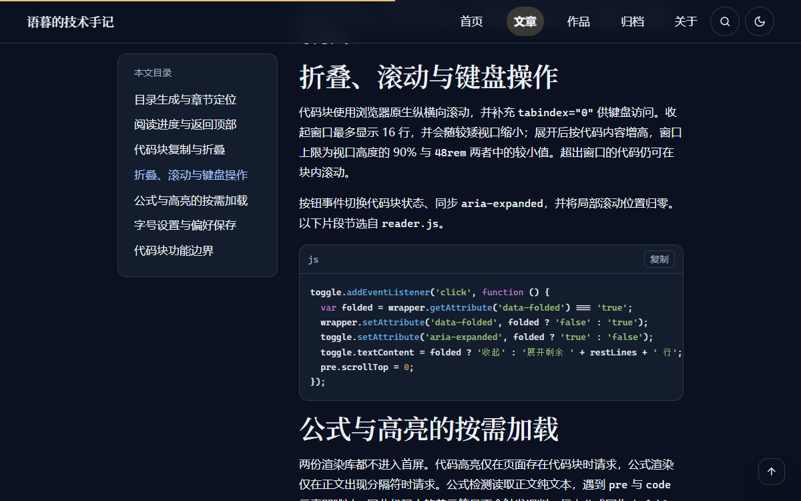

Qi-Blog-YM 个人博客 本站源码。八个页面，原生 HTML、CSS 与 JavaScript，没有构建步骤；本地双击打开与静态托管两种方式都能完整运行。  HTML5 CSS 自定义属性 原生 JavaScript 仓库地址
访问端能力分级模块 首屏判断访问端条件并写入根元素，样式与脚本读同一个结果。低端设备据此停掉模糊、动效与渲染库。  User-Agent 判定 CSS.supports 降级策略 模块源码
阅读增强管线 文章页的目录、进度、字号与代码块操作。公式与高亮只在内容确实需要时才请求。  IntersectionObserver Clipboard API KaTeX 模块源码